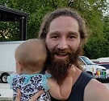

I moved to San Marcos from the Rio Grande Valley in 2007, and knew I wouldn’t want to leave. People formed community around caring for our river, and I thought that was amazing, so I quickly made it a part of my life. I saw the way people fought from the pulpit and at the diocese to protect it from unwise development, and knew I had to get involved. I began working on campaigns in 2010 to ensure our City Council would protect our river, and our history. As a result of that hard work I was appointed to Planning and Zoning in March 2017. Now, I proudly cast votes against developments that our citizens and common sense tell us will not solve our problems. The City cannot withstand more bad developments, so as we attract bigger opportunities to our region we must be more thorough. and aware of the long term repercussions.
I’ve dedicated the later part of my life to engaging the San Marcos community by supporting local businesses, citizens, and ideals. As your City Council representative, I will guide our town towards sustainable growth from the dioceses, and communicate clearly with the community. The San Marcos springs have long brought community together around its banks, and as its current residents we must correct the errors of our past while working to protect our future. I ask that if our values align, we stand together in 2019, and elect Maxfield Baker to City Council Place One.
Don’t elect a half-baked politician, elect Maxfield Baker to San Marcos City Council Place One!
San Marcos needs someone who understands the struggles of transitioning from a student to a permanent resident, that will vote to protect it from overdevelopment, and engages the community at several cross-sections. Maxfield Baker has long been involved in the issues that affect San Marcos, and as a Planning and Zoning Commissioner proven that a well researched “NO” can bring people to the table to compromise. As your City Council Representative, Maxfield will:
Safeguarding neighborhoods, Sustaining our river, Supporting local businesses
Engage Citizen perceptions, Encourage Collaboration, Empower Opportunities
Leverage city resources, Lead by example, Labor with honor.

“I am max and I do max things.”
“I am max and I do max things.”
“I am max and I do max things.”
512-393-4287
Bakermaxfield@gmail.com
San Marcos, TX, 78666
United States